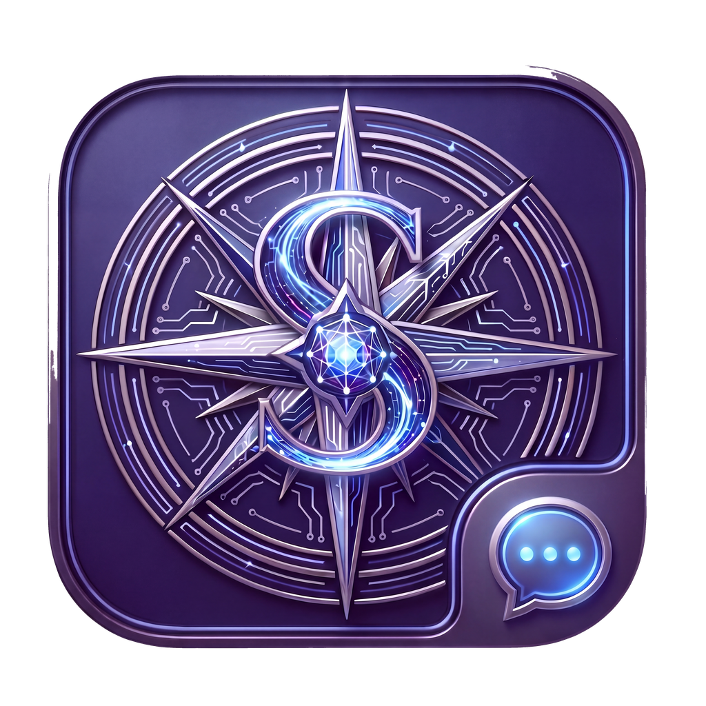

App-owned setup
Onboarding, Full Disk Access guidance, Messages Automation checks, login item control, allowed chats, adapter setup, health, and logs stay in the Mac app.

SiriusMsgDeveloper ID macOS app plus background agent
A signed local Apple Messages bridge that lets humans start AI agent turns from Messages while the Mac app owns setup, permissions, allowlists, health, and adapter status.
Built for the real local Mac path
SiriusMsg is not a terminal script, webhook proxy, or iMessage protocol clone. The signed app guides setup, and the bundled agent owns local receive/send work.
Onboarding, Full Disk Access guidance, Messages Automation checks, login item control, allowed chats, adapter setup, health, and logs stay in the Mac app.
One signed background agent owns read-only cursor state, local service auth, event delivery, SwiftPython hooks, and reply sending.
Agent stacks integrate through the authenticated local service, SiriusMsgKit, or the bundled Python adapter package instead of reading private Messages state.
Privacy defaults
Messages are sensitive local data. SiriusMsg starts with no chats allowed and keeps the privileged Messages core native Swift.
com.apple.MobileSMS.For agent stacks
SiriusMsg centralizes protected local Messages access so adapters can focus on ordinary agent behavior.
Use SiriusMsgKit to subscribe to events, send replies, read health, and configure allowed chats through the same local protocol.
Use the bundled siriusmsg adapter package hosted by SwiftPython inside the signed agent process.
Connect over the authenticated service boundary for non-Swift clients, with backpressure, ACKs, health, and VM-access mode.
Release path
The public artifact is the notarized DMG. Readiness checks run from the signed app and bundled agent, not shell-only probes.
Download the latest notarized DMG from GitHub Releases.
Open SiriusMsg and follow guided setup for Full Disk Access and Messages Automation.
Add only the Messages conversations agents should receive.
Run readiness checks and connect a Swift or Python adapter.